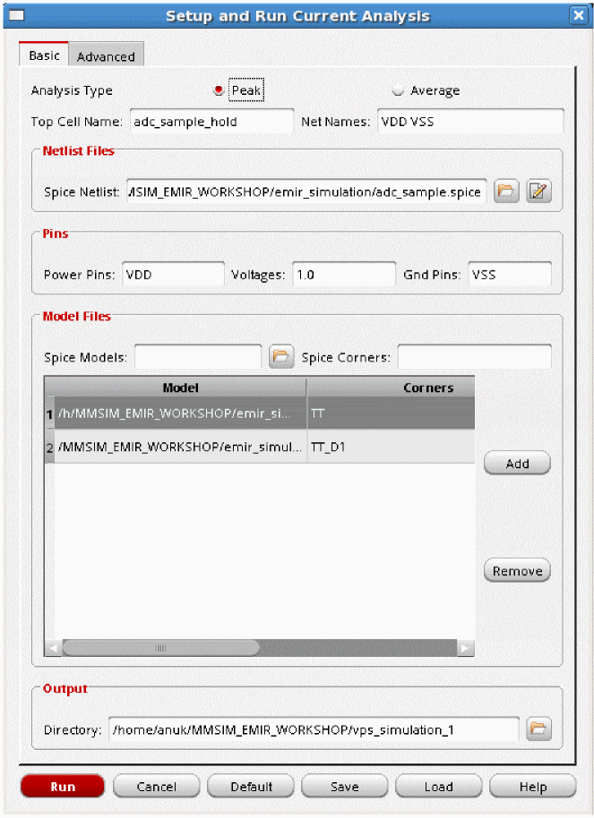
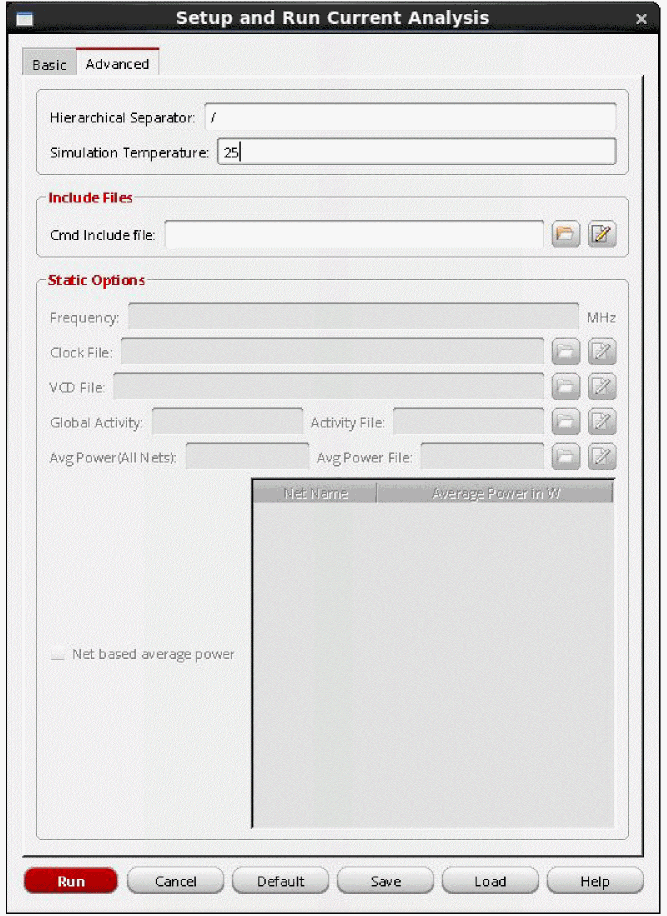
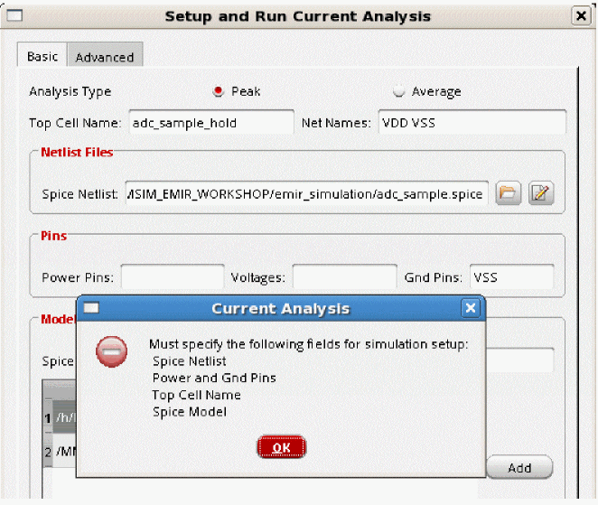
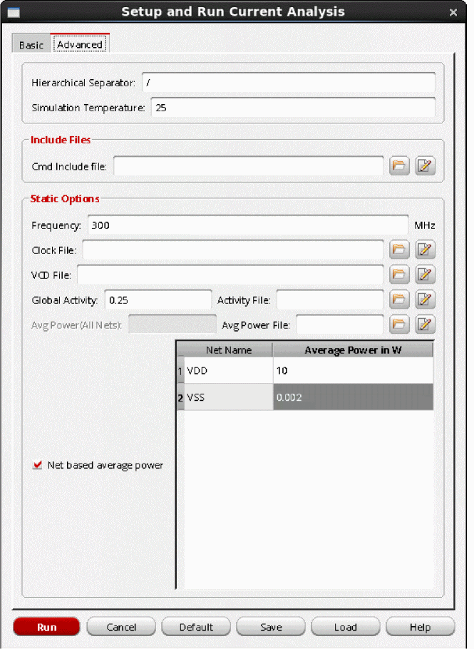

7
Static Current Analysis
- Static Current Analysis
- Static EMIR Flow in Spectre
- Static Current Analysis Overview
- Static Current Analysis Flow
- Static Current Analysis Report
Static Current Analysis
Static current analysis is performed in Voltus-Fi-XL using Thunder. It is performed before running a simulation in Spectre. The static current analysis output file, static_current.txt, is used as an input for performing a Spectre simulation. Following are the key aspects of this feature:
Static EMIR Flow in Spectre
A static EMIR analysis allows the evaluation of IR drop and EM currents based on user-provided subcircuit instance current consumption w/o running a transient or DC simulation. The user-provided currents are distributed to the tap devices based on the W/L ratio of the devices in the design. The IR drop and EM current analysis is performed based on the current at each tap device.
The static EMIR analysis is enabled with the “static ifile” statement in the EMIR conf file.
net name=[I1.VDD I1.VSS] analysis=[vavg iavg]
static ifile="static_currents.txt"
Since the analysis is static, the IR drop vmax and vavg, and the EM current imax, irms, and iavg values will be the same, and just one can be selected in the statement.
For more information, see the “Static EMIR Analysis” section in the Postlayout Simulation chapter of the Spectre Circuit Simulator and Accelerated Parallel Simulator User Guide.
Static Current Analysis Overview
Static current analysis can either be static peak current analysis (Ipeak) or static average current analysis (Iavg). Static peak current analysis is based on the peak saturation transistor currents. Because of simplicity and ability to find problems quickly in power grids, static current analysis is the most commonly performed analysis.
Static average current analysis or activity-based analysis resolves the distribution of currents on your power grid better than the static peak current analysis. The activity-based approach assumes that you have a mechanism such as a Verilog simulator to compute and report the relative activity of the nets in the design. These relative activities can be used in conjunction with net capacitances to estimate the average current load of each gate in the design. This form of analysis clearly provides more realistic current data than the Ipeak approach.
Definition of Activity, Duty Cycle, and Transition Density
Activity means the probability of all the signal nets in design switching from 0->1 or 1->0 in one clock cycle. For instance, if the activity of a net or instance is 0.1, then the power engine assumes that the net or instance will switch from 0->1 or 1->0 once every ten clock cycles.
Activity = (Number of (0->1 or 1->0) transitions/Number of clock cycles) =2/5=0.4
Duty Cycle means the probability that a signal net has the value of 1.
For example, if the signal of a net is 1 for 2ns in the total simulation time of 10ns, then the duty cycle of net is 0.2. The duty cycle of the signal in the previous diagram is 0.5 (2.5/5). However, if a signal is Z or X for some time and 0 for the rest of the time then the duty cycle of the signal is 0.
Transition Density means the number of times the signal toggles from 0->1 or 1->0 in 1 second.
For the previous diagram, if you assume that one clock cycle is 4ns, then:
Transition Density = 1e+08 (2/20ns)
Static Current Analysis Flow
In this section, the following topics will be covered:
Data Requirements for Static Current Calculation
The following data is required to perform static current calculations:
- A Quantus-generated DSPF file
- SPICE model libraries and SPICE corners
- An activity, clock, or value change dump (VCD) file—These inputs are required for the average static current analysis
Setting Up and Running Static Current Analysis
The following topics are covered in this section:
- Setting Up and Running Peak Static Current Analysis
- Setting Up and Running the Average Static Current Analysis
Setting Up and Running Peak Static Current Analysis
Peak static current (Ipeak) analysis gives the peak current (saturated current) of every transistor connected to the power nets.
To set up and run the static current analysis mode for peak current analysis, perform the following steps:
-
In the Virtuoso® console, choose Simulation and then Setup and Run Simulation. The Setup and Run Current Analysis form opens. The form has two tabs, Basic and Advanced. The Basic tab is shown below.
Figure 7-1 Setting Up and Running the Peak Static Current Analysis – Basic Tab
On the Basic tab, provide the following information:
- Select Peak as the Analysis Type.
- The Top Cell Name is populated by default from the layout.
- Specify the Net Names for which you want to calculate the peak current.
-
In the Netlist Files group box, specify the Spice Netlist file, which is the DSPF file.
- In the Pins group box, specify the Power Pins and Gnd Pins (ground pins) for which current analysis is to be performed. Specify the corresponding Voltages for the power pins.
-
In the Model Files group box, choose the Spice Models and the corresponding Spice Corners used by the SPICE netlist. For this, perform the following steps:
- Specify the path of the SPICE model files.
- Specify the corresponding Spice Corners to be used from this model file.
- Click Add to add the SPICE model – SPICE corner pair to the table.
- Continue till all the models and their corresponding corners are specified.
- Click Remove to remove a SPICE model – SPICE corner pair from the table.
-
In the Output group box, specify the Directory, which is the output directory in which all the current data will be saved. By default, for every static current analysis run, the tool will save the results in the directory with the naming convention, “
vps_simulation_#”, where the number is increased incrementally for each run. For example,vps_simulation_1,vps_simulation_2, and so on. -
Select the Advanced tab. This form is shown below.
Figure 7-2 Setting Up and Running the Peak Static Current Analysis – Advanced Tab
On the Advanced tab, provide the following information:
- Specify the Hierarchical Separator. This is required only if the netlist used is hierarchical.
-
Specify the Simulation Temperature, in degree Celsius, at which to perform the simulation. By default, the simulation is performed at 25 degree Celsius.
- Specify the Cmd Include File that passes additional user commands to Thunder during static current analysis.
-
Click Run. If any required input is missing in the form, a pop window opens to list all the required inputs. This is shown below.

Tcl Commands:
An example of the set of Tcl commands for the peak static current calculation is as follows:
setup_simulation\
-spice_netlist design.spice\
-topcell design_name\
-output_directory ./vps_simulation_1
spice_model\
-spice_lib ./models/model1.l\
-spice_corner {TT TT_dio}
spice_model\
-spice_lib ./models/model2.l.special\
-spice_corner {TT_sr}
power_pin\
-pin_name VDD\
-voltage 0.9
ground_pins VSS
run_static_simulation\
-method Ipeak\
-nets {VDD VSS}
For details of the above commands, see the “Batch Mode Execution” chapter.
Setting Up and Running the Average Static Current Analysis
Average static current analysis is a method of analyzing a circuit to obtain the average current flowing through each tap point without using time-based simulation.
For the average (Iavg) static current calculation, the information in the Basic tab of the Setup and Run Current Analysis form remains the same as that filled in for the peak static current analysis, except for specifying the Analysis Type. This is shown below.
Figure 7-3 Setting Up and Running the Average Current Analysis – Basic Tab
- Choose Average as the Analysis Type.
- Specify the Spice Netlist file, which is the DSPF file.
-
Select the Advanced tab. This form is shown below.
Figure 7-4 Setting Up and Running the Average Current Analysis – Advanced Tab
In the Static Options group box, provide the following information:
- Specify the dominant Frequency of the design.
- Specify the Clock File.
- Specify the VCD File. This file contains information about the number of transitions for each net.
- Specify a value for Global Activity in the design. This value represents the average number of times all the unset nodes switch in a clock cycle. Alternately, you can specify the path of the Activity File, which contains the data for the activity factor on any node of the circuit.
-
Specify the Avg Power (All Nets) of the design. This is the average power value for all the nets. The default unit is
W(Watts). If the value is in any other unit, you must specify the unit. For example,20mW. You can also specify the path of the Avg Power File, which contains the average power for specific sub circuits. -
Select Net based average power to specify different power values for different nets. When you check this option, a list box is enabled. The list box has two columns, “Net Name” and “Average Power in W”. The “Net Name” column is already populated with the names of nets specified on the Basic tab. For each net, specify the power value in the “Average Power in W” column.
-
Click Run.You can also create or edit the clock file, VCD file, activity file, and the average power file by using the edit buttons provided against each of these options in the form. For more information about the formats of above files, see Static Current Analysis Files in the “File Formats” chapter.
Tcl Commands:
The example Tcl command for the average static current analysis is as follows:
setup_simulation\
-spice_netlist adc_sample_hold.spice\
-topcell adc_sample_hold\
-output_directory ./vps_simulation_1\
spice_model models/spectre/gpdk090.scs\
-spice_corner {NN}
power_pin\
-pin_name VDD\
-voltage 2.5
ground_pins VSS
run_static_simulation\
-method Iavg\
-nets {VDD VSS}\
-freq 333\
-global_activity 0.25\
-average_power 20mW
For details of the above commands, see the “Batch Mode Execution” chapter.
Static Current Analysis Report
The output of the static current analysis in Voltus-Fi-XL using Thunder is a text report that is saved in the output directory. The report is used by Spectre to run a simulation and create the simulation result file, which is then used for EMIR analysis and visualization in Voltus-Fi-XL. The default text report generated for both peak and average current analysis is static_current.txt.
Node Name specifies the name of the node for which the static current is being reported.
Static Current specifies the value of the static current on the specified node.
X0.AbcI2/avI33/avD30_32 9.83e-05
X0.AbcI2/avI30/avD30_35 9.83e-05
X0.AbcI86/avD27_135 1.96e-05
X0.AbcI86/avD27_134 1.96e-05
X0.AbcI86/avD27_133 1.96e-05
X0.AbcI86/avD27_122 1.96e-05
X0.AbcI86/avD27_121 1.96e-05
X0.AbcI86/avD27_120 1.96e-05
Return to top